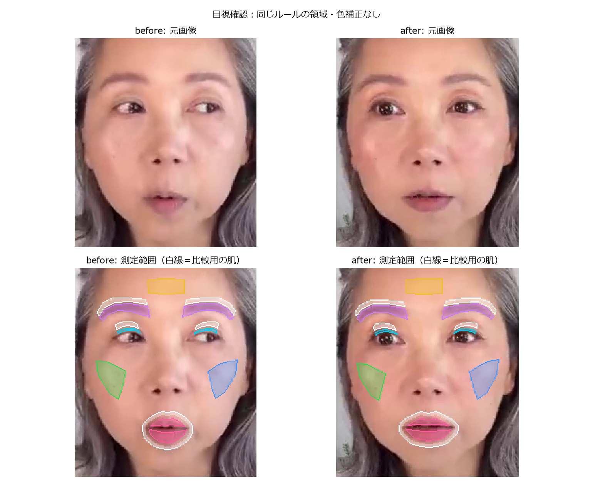
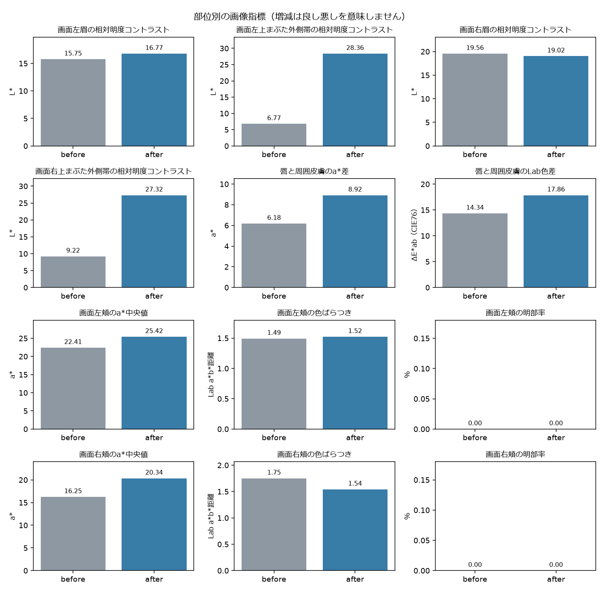
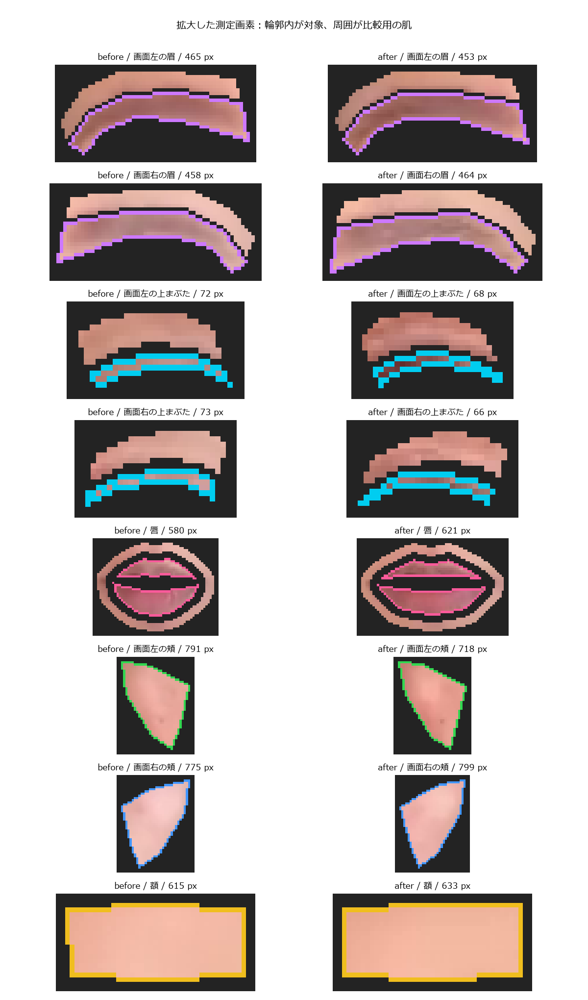

部位別の見た目の変化
比較時刻：01:08.00 → 19:21.30 ／ 左右は画面上の位置です。
目元・眉・唇のコントラスト、頬の色づき・色むら・明部率を同じルールで比較します。
「好印象になったか」の総合点は付けません。自動値の増減を、人の印象評価の理由と照合するための試作です。
総合印象・いきいき感・自然さは人が評価する項目です。ノートブック末尾で任意の目視記録を保存できます。
- 目・眉・唇のROIは新規の自動生成領域です。重ね合わせ画像で位置と遮蔽物を確認してください。
- 視線、表情、照明、ピント、動画圧縮は自動的に補正していません。前後の工程も画像で確認してください。
- 同じ人の2枚の記述比較です。総合的な好印象、化粧の効果、統計的な有意差は判定しません。
- before: 顔幅は約168画素。細かなシワ・肌理の改善はこの処理の評価対象外です。
- after: 顔幅は約167画素。細かなシワ・肌理の改善はこの処理の評価対象外です。


小さい領域を拡大して確認

| 指標 | 単位 | before | after | 差 | 状態 |
|---|
| 画面左眉の相対明度コントラスト | L* | 15.75 | 16.77 | +1.02 | 測定値あり・要目視 |
| 画面左上まぶた外側帯の相対明度コントラスト | L* | 6.77 | 28.36 | +21.59 | 測定値あり・要目視 |
| 画面右眉の相対明度コントラスト | L* | 19.56 | 19.02 | -0.53 | 測定値あり・要目視 |
| 画面右上まぶた外側帯の相対明度コントラスト | L* | 9.22 | 27.32 | +18.10 | 測定値あり・要目視 |
| 唇と周囲皮膚のa*差 | a* | 6.18 | 8.92 | +2.74 | 測定値あり・要目視 |
| 唇と周囲皮膚のLab色差 | ΔE*ab（CIE76） | 14.34 | 17.86 | +3.52 | 測定値あり・要目視 |
| 画面左頬のL*中央値 | L* | 73.85 | 70.72 | -3.14 | 測定値あり・要目視 |
| 画面左頬のa*中央値 | a* | 22.41 | 25.42 | +3.02 | 測定値あり・要目視 |
| 画面左頬のb*中央値 | b* | 15.66 | 18.23 | +2.58 | 測定値あり・要目視 |
| 画面左頬の色ばらつき | Lab a*b*距離 | 1.49 | 1.52 | +0.03 | 測定値あり・要目視 |
| 画面左頬の明部率 | % | 0.00 | 0.00 | +0.00 | 測定値あり・要目視 |
| 画面右頬のL*中央値 | L* | 80.74 | 77.66 | -3.08 | 測定値あり・要目視 |
| 画面右頬のa*中央値 | a* | 16.25 | 20.34 | +4.09 | 測定値あり・要目視 |
| 画面右頬のb*中央値 | b* | 9.69 | 11.98 | +2.30 | 測定値あり・要目視 |
| 画面右頬の色ばらつき | Lab a*b*距離 | 1.75 | 1.54 | -0.21 | 測定値あり・要目視 |
| 画面右頬の明部率 | % | 0.00 | 0.00 | +0.00 | 測定値あり・要目視 |
| 額のL*中央値 | L* | 79.58 | 79.18 | -0.40 | 測定値あり・要目視 |
| 額のa*中央値 | a* | 18.66 | 18.58 | -0.08 | 測定値あり・要目視 |
| 額のb*中央値 | b* | 17.84 | 20.23 | +2.39 | 測定値あり・要目視 |
差は after − before。赤み・明暗差が増えても、それだけで好ましいとは判定しません。
明部率は光沢の候補であり、照明や皮膚色の影響を含みます。シワの評価は含めていません。
測定ルールと画素数
- 画面左眉の相対明度コントラスト：参照皮膚L*中央値 − 対象L*第25百分位数（p25）。正値は対象が相対的に暗いことを示すだけで、改善判定ではない。毛・影・照明・位置ずれも混入する。 元画像の対象465画素（必要32画素以上）。参照皮膚316画素（必要64画素以上）。 対象画素 465 → 453
- 画面左上まぶた外側帯の相対明度コントラスト：参照皮膚L*中央値 − 対象L*第25百分位数（p25）。正値は対象が相対的に暗いことを示すだけで、改善判定ではない。毛・影・照明・位置ずれも混入する。 元画像の対象72画素（必要24画素以上）。参照皮膚134画素（必要64画素以上）。 対象画素 72 → 68
- 画面右眉の相対明度コントラスト：参照皮膚L*中央値 − 対象L*第25百分位数（p25）。正値は対象が相対的に暗いことを示すだけで、改善判定ではない。毛・影・照明・位置ずれも混入する。 元画像の対象458画素（必要32画素以上）。参照皮膚295画素（必要64画素以上）。 対象画素 458 → 464
- 画面右上まぶた外側帯の相対明度コントラスト：参照皮膚L*中央値 − 対象L*第25百分位数（p25）。正値は対象が相対的に暗いことを示すだけで、改善判定ではない。毛・影・照明・位置ずれも混入する。 元画像の対象73画素（必要24画素以上）。参照皮膚126画素（必要64画素以上）。 対象画素 73 → 66
- 唇と周囲皮膚のa*差：唇a*中央値 − 周囲皮膚a*中央値。口腔内・口の境界線は除外。正負に良し悪しを割り当てない。 元画像の対象580画素（必要60画素以上）。参照皮膚528画素（必要64画素以上）。 対象画素 580 → 621
- 唇と周囲皮膚のLab色差：唇と周囲皮膚のL*・a*・b*各中央値のユークリッド距離。口腔内を除外した領域間の色差で、塗布効果や知覚的な改善量を保証しない。 元画像の対象580画素（必要60画素以上）。参照皮膚528画素（必要64画素以上）。 対象画素 580 → 621
- 画面左頬のL*中央値：固定ROI内の中央値。部位の色と撮影条件の確認用で、照明・影・化粧の影響を分離しない。 元画像の対象791画素（必要100画素以上）。 対象画素 791 → 718
- 画面左頬のa*中央値：固定ROI内の中央値。部位の色と撮影条件の確認用で、照明・影・化粧の影響を分離しない。 元画像の対象791画素（必要100画素以上）。 対象画素 791 → 718
- 画面左頬のb*中央値：固定ROI内の中央値。部位の色と撮影条件の確認用で、照明・影・化粧の影響を分離しない。 元画像の対象791画素（必要100画素以上）。 対象画素 791 → 718
- 画面左頬の色ばらつき：a*b*各中央値からの色平面距離の中央値（robust分散の代理量）。明度L*は含めない。値の大小を肌の良し悪しとみなさない。 元画像の対象791画素（必要100画素以上）。 対象画素 791 → 718
- 画面左頬の明部率：ROI内L*中央値 + 8以上の画素割合。光沢の候補量であり、照明・影・形状・化粧の影響が混入する。0%は閾値を超える画素がないことを示し、光沢がないという意味ではない。光沢量の測定や改善判定ではない。 元画像の対象791画素（必要100画素以上）。 対象画素 791 → 718
- 画面右頬のL*中央値：固定ROI内の中央値。部位の色と撮影条件の確認用で、照明・影・化粧の影響を分離しない。 元画像の対象775画素（必要100画素以上）。 対象画素 775 → 799
- 画面右頬のa*中央値：固定ROI内の中央値。部位の色と撮影条件の確認用で、照明・影・化粧の影響を分離しない。 元画像の対象775画素（必要100画素以上）。 対象画素 775 → 799
- 画面右頬のb*中央値：固定ROI内の中央値。部位の色と撮影条件の確認用で、照明・影・化粧の影響を分離しない。 元画像の対象775画素（必要100画素以上）。 対象画素 775 → 799
- 画面右頬の色ばらつき：a*b*各中央値からの色平面距離の中央値（robust分散の代理量）。明度L*は含めない。値の大小を肌の良し悪しとみなさない。 元画像の対象775画素（必要100画素以上）。 対象画素 775 → 799
- 画面右頬の明部率：ROI内L*中央値 + 8以上の画素割合。光沢の候補量であり、照明・影・形状・化粧の影響が混入する。0%は閾値を超える画素がないことを示し、光沢がないという意味ではない。光沢量の測定や改善判定ではない。 元画像の対象775画素（必要100画素以上）。 対象画素 775 → 799
- 額のL*中央値：固定ROI内の中央値。部位の色と撮影条件の確認用で、照明・影・化粧の影響を分離しない。 元画像の対象615画素（必要100画素以上）。 対象画素 615 → 633
- 額のa*中央値：固定ROI内の中央値。部位の色と撮影条件の確認用で、照明・影・化粧の影響を分離しない。 元画像の対象615画素（必要100画素以上）。 対象画素 615 → 633
- 額のb*中央値：固定ROI内の中央値。部位の色と撮影条件の確認用で、照明・影・化粧の影響を分離しない。 元画像の対象615画素（必要100画素以上）。 対象画素 615 → 633